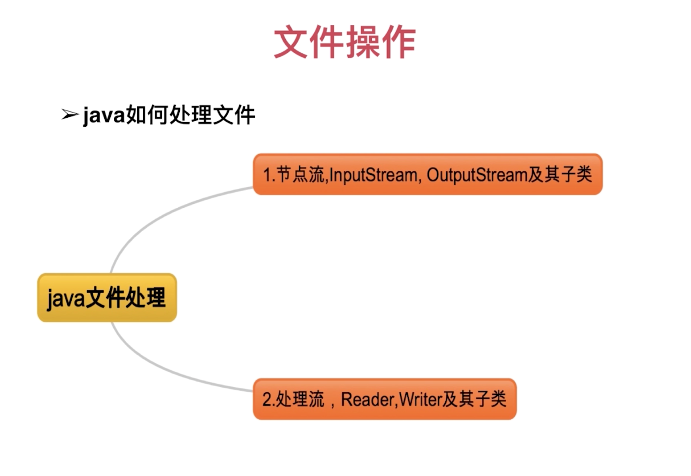

1.文件操作

- 所有java对文件处理的类，groovy都可以使用
- groovy扩展了许多更加快捷和强大的方法
1.1 文本的读写
def file = new File('../../GroovySpecification.iml')
读取文件内容
//eachLine不常用
file.eachLine {
line -> println line
}

def text = file.getText()
println text

//返回列表
def result = file.readLines()
println result.toListString()

//读取部分内容
def reader = file.withReader {
reader ->
char[] buffer = new char[100]
reader.read(buffer)
return buffer
}
println reader

拷贝（读写）
//groovy提供的方法为我们关闭了流
def copy(String sourcePath,String destinationPath){
try{
def desFile = new File(destinationPath)
if(!desFile.exists()) {
desFile.createNewFile()
}
def sourceFile = new File(sourcePath)
if(!sourceFile.exists()) {
return false
}
sourceFile.withReader {
reader ->
def lines = reader.readLines()
desFile.withWriter {
writer ->
lines.each {
writer.append(it+'\r\n')
}
}
}
return true
}catch(Exception e){
e.printStackTrace()
}
}
def result = copy('../../GroovySpecification.iml','../../GroovySpecification2.iml')
println result

1.2 对象的读写
def saveObject(Object obj,String path){
try{
def file = new File(path)
if(!file.exists()) {
file.createNewFile()
}
file.withObjectOutputStream {
out ->
out.writeObject(obj)
}
return true
}catch(Exception e){
e.printStackTrace()
}
}
def readObj(String path){
def obj = null
try{
def file = new File(path)
if(file == null || !file.exists()) {
return null
}
file.withObjectInputStream {
input ->
obj = input.readObject()
}
}catch(Exception e){
e.printStackTrace()
}
return obj
}
def person = new Person(name: 'krido',age: 18)
saveObject(person,'../../person.bin')
def obj = (Person)readObj('../../person.bin')
println("name is ${obj.name} age is ${obj.age}")

1.3 上节jsonToString结果写到文件中
def toFile(StringWriter sw,String path){
try{
def file = new File(path)
if(!file.exists()) {
file.createNewFile()
}
file.withWriter {
write ->
sw.each {
line ->
write.append(line.toString() + '\r\n')
}
}
}catch(Exception e){
e.printStackTrace()
}
}
toFile(sw,'../../xmltest.iml')

阶段总结
groovy与java对比
- 写法上：没有java那么多限制（可以不加分号，可以不写return等）
- 功能上：对java已有的功能进行了极大的扩展
- 作用上：既可以编写应用，也可以编写脚本